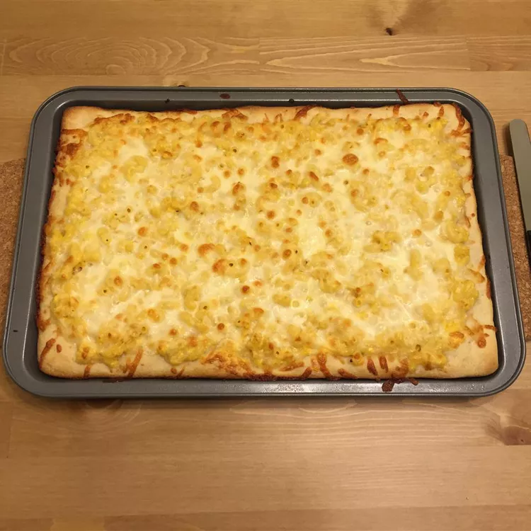

Mac N Cheese Pizza Recipe

Description
Macaroni And Cheese, commonly referred to as Mac N Cheese is a popular meal in the United States! Combine this with another popular mean, pizza, and you get Mac N Cheese Pizza! It's a simple recipe that'll surely make your taste buds happy!
Ingredients
- Cooking Spray
- 1.5 Cups Elbow Macaroni
- 1/4 Cup Butter
- 1 Tablespoon All-Purpose Flour
- Milk
- 3/4 Pound Processed Cheese (Such As Velveeta), Cubed
- 1/2 Cup Shredded Mozzarella Cheese
Steps
- Preheat oven to 400 degrees F (200 degrees C). Spray a 10x15-inch baking sheet with cooking spray. Unroll pizza crust and place on the prepared baking pan.
- Bring a large pot of lightly salted water to a boil. Cook elbow macaroni in the boiling water, stirring occasionally until cooked through but firm to the bite, 8 minutes. Drain.
- Melt butter in a large saucepan over medium heat; cook and stir flour with butter until it has a slightly toasted fragrance, about 2 minutes. Whisk in milk and simmer until thickened, whisking constantly, 2 more minutes. Stir in processed cheese cubes. Let the cheese cubes melt, stirring often, to make a smooth cheese sauce.
- Spread about 3/4 cup of cheese sauce onto the pizza crust. Stir cooked macaroni into remaining cheese sauce in the saucepan and spoon the macaroni and cheese onto the crust in an even layer. Sprinkle top of pizza with mozzarella cheese.
- Bake in the preheated oven until the crust is lightly browned and the mozzarella cheese is golden brown, about 15 minutes.